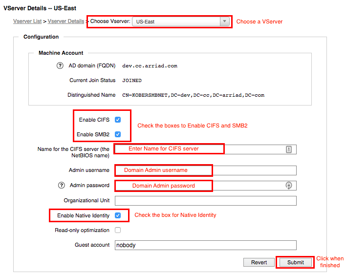
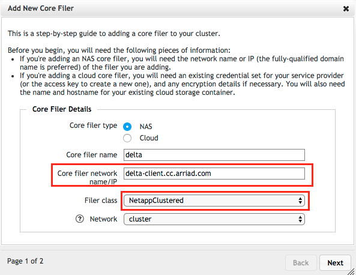
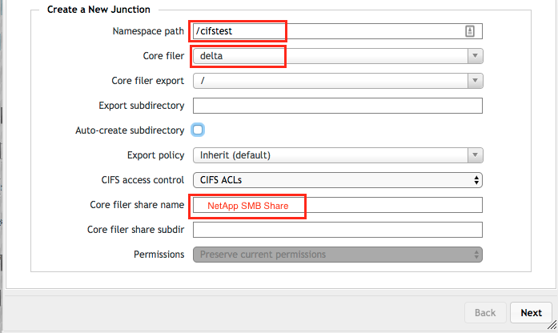
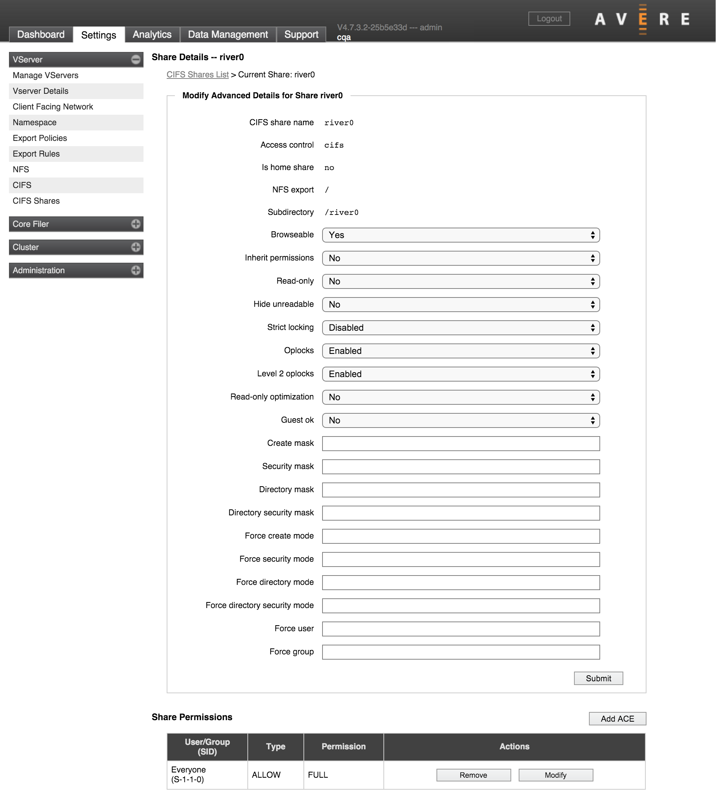

Appendix F: Configuring NetApp Filers for Avere SMB ACLs
This document explains how to configure NetApp storage to support ACL-based security for SMB when used with an Avere cluster. It also gives more detail about the steps needed to set up and use SMB with an Avere cluster and a NetApp filer.
The specific steps are different depending on whether your NetApp filer uses Clustered Data ONTAP or Data ONTAP in 7-Mode. After reading the prerequisite sections, be sure to read the correct steps for your system:
NetApp Filer Requirements for SMB ACL Support
The following constraints apply to SMB/CIFS ACL support when using an Avere cluster with a NetApp Data ONTAP network-attached storage system.
[ xxx adapted from a c-mode requirements list - what is wrong or missing for 7-mode? xxx ]
- Data ONTAP version:
- For Clustered Data ONTAP, version 8.3.1 or higher is required.
- For 7-Mode Data ONTAP, version 7.* or higher is required. [ xxx double check? xxx ]
- Only NetApp “NTFS” security style is supported (mixed mode is unsupported).
- Native Identity is required. (If username download is configured on the Avere cluster, you can use a separate vserver for ACL support.) [ xxx is this for clustered only? xxx ]
- Username download on the NetApp core filer is optional. [ xxx clustered only or both? xxx]
All general NFS export requirements must be met - for example, the filer export rules must allow root access for the Avere cluster and client facing addresses. [ xxx does previous sentence apply for 7-mode? xxx ] For clustered Data ONTAP, remember that each volume can have a different export policy, so you might need to update multiple policies and not just the policy associated with the root volume.
Note that Avere SMB/CIFS ACL migration requirements require a core filer SMB share that provides access to the NFS export /.
Steps To Take Before Configuring SMB
This document assumes that Avere cluster setup is complete and the cluster is up and running in a good state. Also, make sure that these elements are in place:
- The cluster should be configured for multiprotocol access, with an LDAP server and Active Directory system set up and configured with the correct user and group information. Read Appendix F: Configuring Active Directory for Avere SMB for more details.
- Needed ports must be open to the Active Directory environment. [ xxx ports on the Avere cluster? Where is this configured, in vserver config or somewhere else? xxx ]
- The cluster network must be configured with a working gateway and at least one NTP server.
- The cluster must have an SMB-enabled vserver with a client-facing network set up. [ xxx does this apply to 7-mode? xxx ]
About NetApp Filer Language Settings
The NetApp filer must use UTF-8 encoding and have volume language settings correctly configured before using it with ACL-controlled SMB shares through an Avere cluster. This configuration is especially critical if any filenames on the volume include multi-byte (non-ASCII) characters.
Incorrect language settings can cause the Avere cluster to see different filenames for a single file when accessing the file with NFS and with SMB. By default, SMB client communications always use UTF-16 encoding for filenames, but NFS communications use the encoding that corresponds to the volume’s locale and language setting. Even if you do not have any NFS clients accessing the core filer through your Avere cluster, the cluster itself can make NFS requests.
Having multiple different filenames interferes with ACL evaluation and disrupts caching algorithms.
The create_ucode and convert_ucode options can be enabled on NetApp volumes to help reduce computational load on the core filer if filenames must be translated between UTF-16 and UTF-8.
NetApp’s knowledge base article number 000002412 explains how volume language affects the storage system.
When setting up each NetApp volume for SMB access, check the language settings on the volume and adjust them if necessary. Also consider enabling the create_ucode and convert_ucode options.
The following examples show how to check and configure language settings on a NetApp volume named vol0.
Checking and setting the volume language:
netapp> vol lang vol0
Volume language is undefined 0 (undefined)
netapp> vol lang vol0 en_US.utf-8
The new language mappings will be available after reboot
Setting ucode options:
netapp> vol options vol0
nosnap=off, nosnapdir=off, minra=off, no_atime_update=off, nvfail=off,
ignore_inconsistent=off, snapmirrored=off, create_ucode=off,
convert_ucode=off, maxdirsize=5242, schedsnapname=ordinal,
fs_size_fixed=off, compression=off, guarantee=none, svo_enable=off,
svo_checksum=off, svo_allow_rman=off, svo_reject_errors=off,
no_i2p=off, fractional_reserve=100, extent=off, try_first=volume_grow,
snapshot_clone_dependency=off
netapp> vol options vol0 create_ucode on
netapp> vol options vol0 convert_ucode on
netapp> vol options vol0
nosnap=off, nosnapdir=off, minra=off, no_atime_update=off, nvfail=off,
ignore_inconsistent=off, snapmirrored=off, create_ucode=on,
convert_ucode=on, maxdirsize=5242, schedsnapname=ordinal,
fs_size_fixed=off, compression=off, guarantee=none, svo_enable=off,
svo_checksum=off, svo_allow_rman=off, svo_reject_errors=off,
no_i2p=off, fractional_reserve=100, extent=off, try_first=volume_grow,
snapshot_clone_dependency=off
[ xxx a lot more details in Trac 23558 but I’m not sure it’s needed - ? xxx ]
Note that a core filer reboot is recommended after changing volume language settings.
SMB Setup - Clustered Data ONTAP
This example walks through initial SMB configuration for a NetApp core filer that uses clustered Data ONTAP and SMB ACLs.
To configure a system that uses 7-mode, read SMB Setup - Data ONTAP 7-Mode.
This document assumes that the Avere cluster meets the requirements outlined in NetApp Filer Requirements for SMB ACL Support and Steps To Take Before Configuring SMB.
Also, do not add the NetApp core filer to the cluster until after you have checked its configuration as described in 3. Verify the NetApp Filer Configuration.
These are the steps needed to set up SMB with an Avere cluster and a NetApp clustered system:
- Configure cluster directory services
- Configure SMB on the Cluster VServer
- Check the Configuration of the NetApp Filer
- Set up Constrained Delegation
- Add the NetApp System as a Cluster Core Filer
- Add a Namespace Junction to the NetApp SMB Volume
- Add the SMB Shares to the Avere Cluster
- Configure share permissions
1. Configure Directory Services
Make sure that the Avere cluster has the correct Active Directory configuration.
Use the Cluster > Directory Services settings page to modify the cluster’s directory services configuration. Click on the name default to view or modify the settings.

Make sure that these two items are set in the CIFS section of the configuration:
- In User/Group Name, check I don’t have any for the Source value.
- In the Active Directory section, enter your domain and click the Lookup button to validate the setting.
{kind=link}
For more information about these settings, read Cluster > Directory Services.
2. Configure SMB on the Cluster VServer
Use the VServer > CIFS settings page to configure SMB on the Avere cluster’s vserver. (If you will use more than one vserver for SMB access to this core filer, repeat the vserver configuration steps for each vserver.)
{kind=link}
Specifically, make the following changes:
- Select Enable CIFS.
- Select Enable SMB2.
- Specify the SMB server name.
- Specify the AD administrative username and password. (If the admin account has no password, leave this field blank.)
- Select Enable Native Identity.
Click Submit to save the changes and turn on SMB for this vserver.
VServer > CIFS gives more details about this configuration page.
3. Verify the NetApp Filer Configuration
Make sure that the NetApp storage system is ready to be used with the Avere cluster for SMB.
Note
- The Clustered Data ONTAP software version must be 8.3.1 or later.
- The NetApp volume security style must be set to “NTFS”. (Mixed is not supported.)
All general NFS export requirements must be met - for example, NAS core filer export rules must allow root access for cluster and client-facing addresses. Remember that each Clustered Data ONTAP volume can have a different export policy, so you might need to update multiple policies, not only the policy that is associated with the root volume.
Take the following steps on the NetApp system to configure it to communicate and share SMB ACLs with the Avere cluster.
Determine the NetApp vserver:
vserver show -type data
Create a mapping between the NFS user root and the AD domain administrator:
vserver name-mapping create -vserver $<VSERVER_NAME> -direction unix-win -position 1 -pattern ^root$ -replacement "$<DOMAIN>\\Administrator"Verify the mapping:
vserver name-mapping show
Configure NFS root user access to bypass filesystem ACL checks:
set -privilege advanced vserver nfs modify -vserver $<VSERVER_NAME> -ignore-nt-acl-for-root enabled
Set the default UNIX user to “root” rather than “nobody”:
vserver cifs options modify -vserver $<VSERVER_NAME> -default-unix-user root
Verify the default UNIX user:
vserver cifs options show -vserver $<VSERVER_NAME>
Determine which volume is associated with the desired path:
volume show -vserver $<VSERVER_NAME> $<VOLUME_NAME> -fields junction-path
Verify that the language setting is C.UTF-8 (see About NetApp Filer Language Settings above):
volume show -vserver $<VSERVER_NAME> -volume $<VOLUME_NAME> -fields language
Verify that the volume security style is NTFS:
volume show -vserver $<VSERVER_NAME> -volume $<VOLUME_NAME> -fields security-style
Determine the CIFS share name that accesses the desired path:
vserver cifs share show -vserver $<VSERVER_NAME>
Verify that the share ACL gives permissions for the desired users and for the AD domain administrator:
vserver cifs share show -vserver $<VSERVER_NAME> $<VOLUME_NAME> -fields acl
Determine the node that owns the volume:
volume show -vserver $<VSERVER_NAME> -volume $<VOLUME_NAME> -fields node
Verify that the ACL for the volume permits access:
vserver security file-directory show -vserver $<VSERVER_NAME> -volume-name $<VOLUME_NAME> -path $<PATH>
Configuring Additional Volumes
After the root volume has been correctly configured, other volumes created by using the NetApp command line interface should inherit the correct values. However, you should verify the settings on any newly created volume, since it is possible that some configuration settings might be applied improperly.
- [ xxx to do - ?
- ? add example exports from NetApp ? add examples of NetApp CLI output for commands above xxx ]
4. Configure Constrained Delegation in Active Directory
Use the Active Directory administration tool to set up permissions between the vserver on the Avere cluster and the NetApp core filer.
Directions are included in Appendix F: Configuring Active Directory for Avere SMB. Read 2. Configure Kerberos Constrained Delegation.
5. Add the NetApp System as a Core Filer in the Avere Cluster
Use the Create button on the Core Filer > Manage Core Filers settings page to define the NetApp storage system as a core filer in the Avere cluster.
When creating the core filer, be sure to use fill in the Core filer network name/IP field with either the fully qualified domain name or with a NetBIOS name that maps exactly to the SPN entry for the SMB share.
{kind=link}
Read Adding a New Core Filer - NAS Core Filer for details.
6. Add a Namespace Junction to the NetApp Export
Use the VServer > Namespace settings page to create a new junction that maps the NetApp core filer to the client namespace on the Avere cluster.
{kind=link}
If SMB options do not show, click the checkbox labeled Advanced.
When creating the junction, make sure you fill in these fields correctly:
- In the CIFS access control field, choose CIFS ACLs.
- In the Core filer share name field, specify the SMB share name that corresponds to the share on the NetApp system.
Read Creating A Junction in VServer > Namespace for more details.
7. Add an SMB Share on the Avere Cluster
Use the VServer > CIFS Shares settings page to create a share on the Avere cluster that will communicate with the back-end SMB share on the NetApp system.

In the Namespace path field, enter the same path that you used in creating the junction in step 8.
Read VServer > CIFS Shares for details.
8. Configure Share Permissions
To configure share-level permissions, use the VServer > CIFS Shares page in the Settings tab. Find the SMB share that you want to review or modify, and click its name to load its share details page.
A list of access control entries for the share appears at the bottom of the share details page.
{kind=link}
Click the Modify button to update the share permissions.

Read Share-Level Access Control Lists (ACLs) for information about the values that are supported.
SMB Setup - Data ONTAP 7-Mode
[ xxx can this follow the same steps as for clustered mode, above? things like adding the core filer and creating the junction should be identical, right?
I will make this draft try to fit that structure & see if it works.
Cluster mode steps:
- Configure cluster directory services
- Configure SMB on the Cluster VServer
- Check the Configuration of the NetApp Filer
- Set up Constrained Delegation
- Add the NetApp System as a Cluster Core Filer
- Add a Namespace Junction to the NetApp SMB Volume
- Add the SMB Shares to the Avere Cluster
- Configure share permissions
xxx ]
The following instructions show the commands needed to ensure that a NetApp 7-Mode volume and share can be used by an Avere cluster for SMB ACLs.
(To configure a system that uses Clustered Data ONTAP, read SMB Setup - Clustered Data ONTAP.)
Command examples use a volume called /vol/myvol, and an SMB share myshare.
1. Configure Directory Services
[ xxx copy text from 1. Configure Directory Services - is that correct? any differences? xxx ]
2. Configure SMB on the Cluster VServer
[ xxx copy of the text in 2. Configure SMB on the Cluster VServer xxx ]
3. Verify the NetApp Filer Configuration
Make sure that the NetApp storage system is ready to be used with the Avere cluster for SMB.
All general NFS export requirements must be met - for example, NAS core filer export rules must allow root access for cluster and client-facing addresses.
Issue these commands on the NetApp Filer command line.
Make sure that SMB is enabled on the NetApp filer.
[ xxx how to check this or enable it?
cifs setup? xxx ]Configure the filer’s storage volume to enable read, write, and root access:
exportfs -q /vol/myvol exportfs -p sec=sys,rw,anon=0,nosuid,root=10.0.0.0/8 /vol/myvol exportfs -q /vol/myvol
Make sure that the volume’s security style is NTFS. Other styles are unsupported for SMB use with an Avere cluster.
To check the security style, use this command:
qtree security /vol/myvol
Use this command to set the security style to NTFS if necessary:
qtree security /vol/myvol ntfs
Verify that the volume security allows access to Everyone with Full Control:
fsecurity show /vol/myvol
Check that the SMB share exists on the volume:
cifs shares myshare
If necessary, create the share:
cifs shares -add myshare /vol/myvol
Configure the system to allow root access without checking ACLs.
Avere OS requires that the UNIX root user bypass ACL processing on the filer. Its SMB implementation uses the NFSv3 protocol from the Avere cluster to filers for file and directory operations, and uses SMB (version 1) from the Avere cluster to the filers for ACL operations.
For safety, Avere Systems recommends isolating root access to the “cluster” IP addresses and “management” IP address; do not allow root access to the client-facing IP addresses of the Avere cluster.
Use this setting to bypass root ACL processing:
options cifs.nfs_root_ignore_acl on
Ensure that the root user is mapped to a AD domain administrator account. Check the setting with this command:
rdfile /vol/vol0/etc/usermap.cfg
If necessary, create the mapping file. This example uses a domain name of ACME:
wrfile -a /vol/vol0/etc/usermap.cfg “ACME\Administrator == root”
Check LDAP settings. Here are some commands to run on the filer to ensure that LDAP is working correctly. (Note that
priv set advancedmust be active for thegetXXbyYYcommand to work.):priv set advanced getXXbyYY getpwbyname_r ‘AvereUser’ getXXbyYY getpwbyuid_r <pw_uid value returned from previous command> getXXbyYY getgrbygid <pw_gid value returned from previous command> getXXbyYY getgrbyname ‘<group name returned from previous command>’ wcc -u ‘AvereUser’ wcc -s ‘AvereUser’ cifs lookup ‘AvereUser’ cifs lookup ‘<GROUP_NAME>
Ensure that volume language settings are correct:
volume show -vserver $<VSERVER_NAME> -volume <VOLUME_NAME> - fields language
The value should end in UTF-8. If it does not, use a command like the following to set the language value:
vol lang <VOLUME_NAME> C.UTF-8
Read About NetApp Filer Language Settings for additional information.
[ xxx repeat steps for additional volumes? xxx ]
4. Configure Constrained Delegation in Active Directory
[ xxx need this? same as clustered instructions? xxx ]
5. Add the NetApp System as a Core Filer in the Avere Cluster
[ xxx need this? same as clustered instructions? xxx ]
6. Add a Namespace Junction to the NetApp Export
[ xxx need this? same as clustered instructions? xxx ]
7. Add an SMB Share on the Avere Cluster
[ xxx need this? same as clustered instructions? xxx ]
8. Configure Share Permissions
[ xxx need this? same as clustered instructions? xxx ]